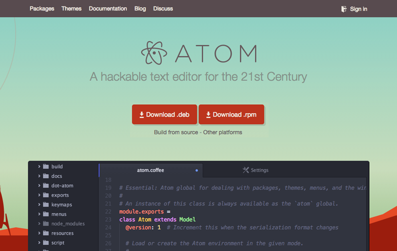
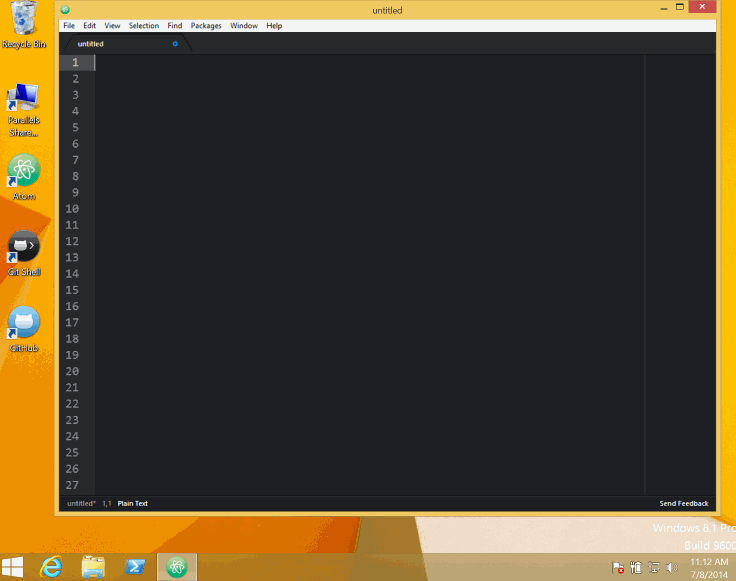

想要使用 Atom，我们就得先安装它。这部分将会讲到如何在 Mac，Windows 和 Linux 上安装 Atom，以及如何从源码构建它。
在这些系统下安装 Atom 都很简单。访问 https://atom.io 后在页面顶部就能看到下载按钮。

图 1. atom.io 网站的下载按钮
这些按钮的文字和行为会自动对应你的操作系统，下载和安装都很方便。但我们还是一起详细看看吧！
Atom 最初就是为 Mac 环境构建的，所以安装过程非常简单。可以直接点击 atom.io 网站上的下载按钮，也可以访问 Atom 的发布页：
https://github.com/atom/atom/releases/latest
直接下载 atom-mac.zip 文件。
待文件下载完成后，点击解压，然后拖拽解压出来的 Atom 程序到你的 「Applications」 文件夹。
当你第一次打开 Atom 时，它会尝试安装终端下使用的 atom 和 apm 命令。在某些情况下，可能会因为需要管理员密码而安装失败。要检查 atom 命令是否安装成功可以在终端运行 which atom，如果 atom 命令安装好了，会看到这样的输出：
$ which atom
/usr/local/bin/atom
$
如果 atom 命令没有安装，which 命令不会有输出：
$ which atom
$
想要自己安装 atom 和 apm 命令，可以在 Command Palette 运行 「Windows: Install Shell Commands」，会自动弹框询问你的管理员密码。（译注：Mac 下打开 Command Palette 的快捷键是 shift+cmd+p，Windows 下是 ctrl+shift+p 。）
在 Windows 可以从 https://atom.io 获取 Windows Installer，也可以从 Atom Releases 下载 AtomSetup.exe。
它们会帮你安装好 Atom，将 atom 和 apm 命令添加到 PATH 环境变量，在桌面和开始菜单创建快捷方式，往右键菜单添加「Open with Atom」，让 Atom 能够在用户从「打开方式」里选取关联程序时可见。

图 2. Windows 下的 Atom
Atom 在 Windows 下有一种便携模式，允许将它自己、Settings、Packages 和缓存等都放置在可移动存储设备上，这将使你能很容易地把 Atom 拿到另一台机器使用，不用安装任何东西。
开始使用便携模式的 Atom：
atom-windows.zipatom-windows.zip 解压到你的可移动存储设备atom.exe%USERPROFILE% 下创建 .atom 文件夹.atom 文件夹和可移动存储设备里的 Atom 文件夹放到一起现在不管你何时从你的可移动存储设备启动 Atom.exe，就会进入便携模式，所有的 settings 和 packages 都会保存到 .atom 文件夹。
注意便携模式有几点限制：
.atom 文件夹必须放在包含 atom.exe 的文件夹的同级（不是里面）.atom 文件夹必须是可写的在 Linux 下安装 Atom，你可以从 Atom 主页 或者 Atom 项目发布页 按需下载 Debian package 或 RPM package。
在 Debian 下可以使用 dpkg -i 安装 Debian 软件包：
$ sudo dpkg -i atom-amd64.deb
在 RedHat 或者其它基于 RPM 的系统，可以使用 rpm -i 命令：
$ rpm -i atom.x86_64.rpm
如果上面这些方案都不适用于你的环境，或者你只是想试一试，那么也可以从源码构建 Atom。
这个链接里有最新的详细构建教程，有 Mac、Windows、Linux 和 FreeBSD 几种版本：
https://github.com/atom/atom/tree/master/docs/build-instructions
一般来讲，你需要使用 Git、C++ 工具链和 Node 去构建 Atom，上面的项目的文档里有详细介绍。
如果你在使用代理，那可以通过设置 ~/.atom/.apmrc 文件里的 https-proxy 字段来配置 apm（Atom Package Manager）：
https-proxy = https://9.0.2.1:0
如果你开启了防火墙并且在安装 packages 时看到 SSL 错误，那可以在 ~/.atom/.apmrc 里添加这样一行来禁用对 SSL 证书的检查：
strict-ssl = false
你可以使用 apm config get https-proxy 来验证代理是否设置成功，使用 apm config list 来列出所有自定义设置。